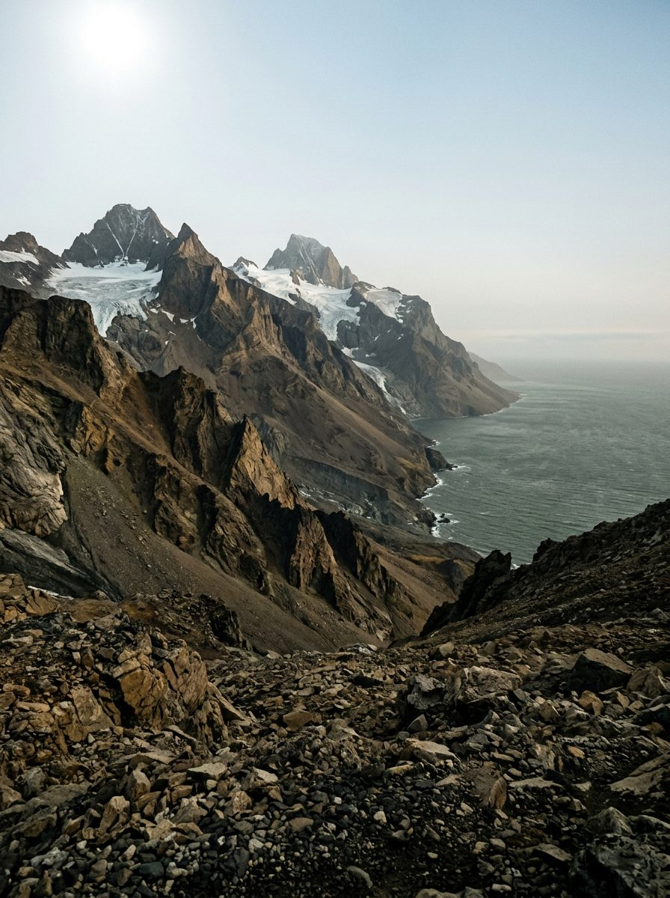
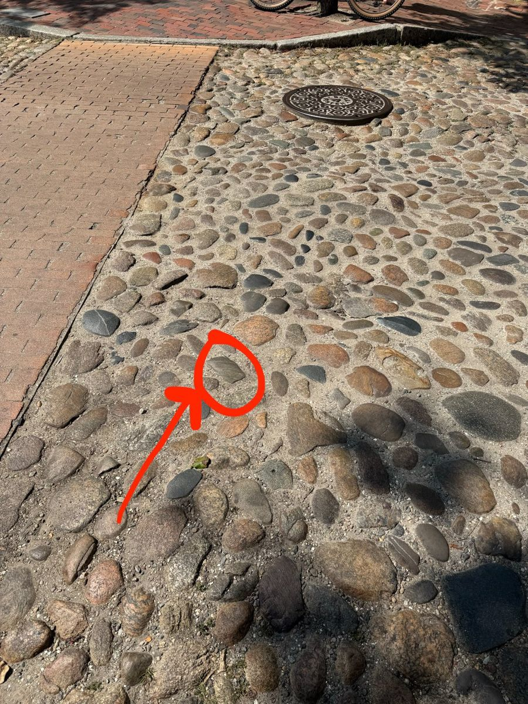

~1.1 billion years
The Foundation
Grenville gneiss
Bare rock and gravel to every horizon. No soil, no green, jagged young mountains, rivers with nothing living beside them.
- Find it
- Banded grey stone, streaky where the light catches it.
- In your hand
- Banded iron and a stromatolite. Life is already here, hidden in iron and microbial mats.

